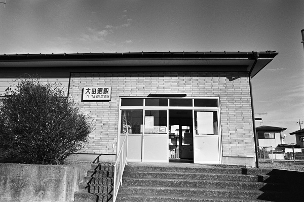

KJ24_関東鉄道常総線
KJ_大田郷駅 OOtagou
黒子駅
←← 関東鉄道常総線 →→
下館駅

2018/12/26 ﾍｷｻｰRF 25mm ｱｸﾛｽ
2018/12/26 ﾍｷｻｰRF 25mm ｱｸﾛｽ
2018/12/26 ﾍｷｻｰRF 25mm ｱｸﾛｽ
2018/12/26 ﾍｷｻｰRF 25mm ｱｸﾛｽ
2018/12/26 ﾍｷｻｰRF 25mm ｱｸﾛｽ
2018/12/26 ﾍｷｻｰRF 25mm ｱｸﾛｽ
戻る
ﾎｰﾑ